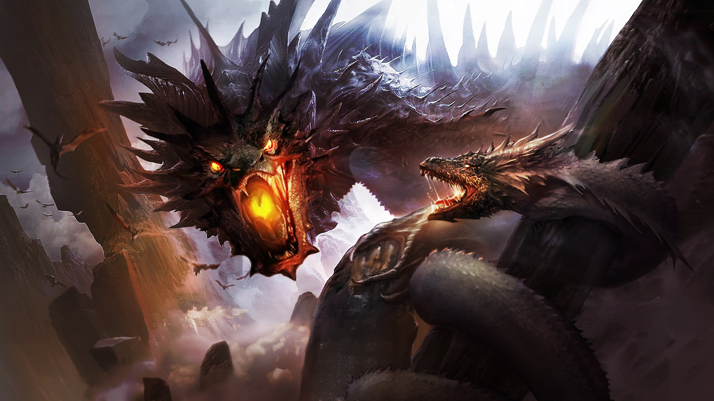

The oldest extant Hydra narrative appears in Hesiod's Theogony, while the oldest images of the monster are found on a pair of bronze fibulae dating to c. 700 BC. In both these sources, the main motifs of the Hydra myth are already present: a multi-headed serpent that is slain by Heracles and Iolaus. While these fibulae portray a six-headed Hydra, its number of heads was first fixed in writing by Alcaeus (c. 600 BC), who gave it nine heads. Simonides, writing a century later, increased the number to fifty, while Euripides, Virgil, and others did not give an exact figure. Heraclitus the Paradoxographer rationalized the myth by suggesting that the Hydra would have been a single-headed snake accompanied by its offspring.[7]
No fantasy setting is complete without dragons. From Game of Thrones to The Hobbit, adding dragons to a story helps reinforce the notion that in this world, anything is possible. Dragons come in so many different colors, shapes, and sizes; it may be hard to know where to begin when illustrating one. Follow these simple steps to take off in dragon drawing.
